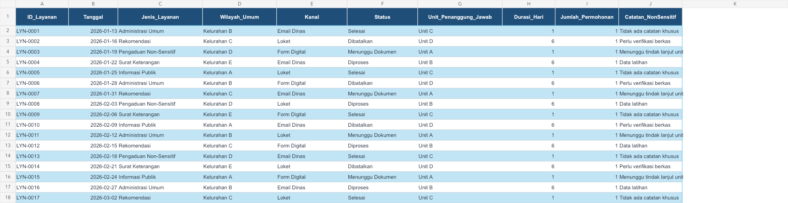
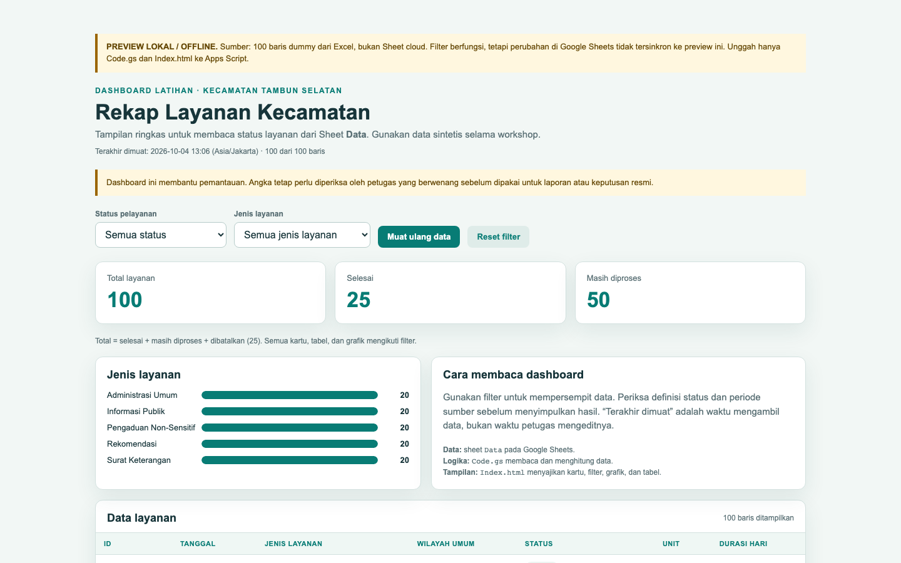
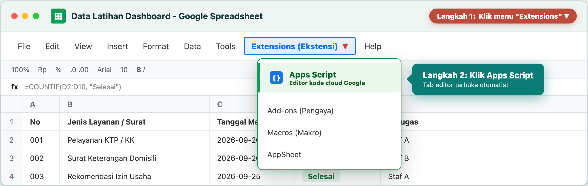

Dashboard Rekap Layanan Kecamatan
Memahami basic AI dan prompting yang aman, lalu mempraktikkan perubahan data Excel menjadi dashboard di Google Sheets, Apps Script, dan browser.
100 baris data latihan
Status · Jenis_Layanan
Unit · Tanggal
Total layanan 100
Selesai 25
Diproses 50
Pembagian kelompok dan alur workshop
Pembagian kelompok sudah dilakukan sebelum materi dimulai. Silakan Bapak dan Ibu tetap duduk bersama kelompok masing-masing.
S / Pak Syam · Teori AI
Basic AI, Generative AI, keamanan data, verifikasi manusia, dan cara menyusun prompt yang jelas.
Y / Yazid · Praktik dashboard
Excel, Google Sheets, Apps Script, pengujian KPI, filter, dan link dashboard jika akses siap.
Rekap layanan
Jenis layanan, status proses, dan unit penanggung jawab.
Surat dan disposisi
Prioritas, tenggat, unit tujuan, dan status disposisi.
Agenda internal
Jadwal kegiatan, persiapan, lokasi umum, dan peserta rencana.
Basic AI: apa yang sebenarnya dibantu?
AI adalah alat bantu pengolahan pola dan informasi. AI bukan pengganti pemilik proses atau pejabat yang mengambil keputusan.
Generative AI: menghasilkan draf dari konteks
Model generatif menyusun keluaran berdasarkan instruksi dan konteks yang kita berikan. Keluaran yang lancar belum tentu benar.
Contoh keluaran
- Draf jawaban informasi layanan
- Ringkasan laporan atau rapat
- Rancangan pertanyaan survei
- Rancangan dashboard dan kode awal
Jangan disamakan dengan
- mesin pencari yang selalu memberi sumber;
- pejabat yang mengesahkan dokumen;
- database resmi yang otomatis benar.
AI dapat membantu pekerjaan apa?
Mulai dari tugas yang berulang dan berisiko rendah. Pilih bantuan yang hasilnya mudah diperiksa.
| Situasi kerja | AI dapat membantu | Manusia tetap memeriksa |
|---|---|---|
| Informasi berulang | Menyusun draf jawaban berdasarkan SOP yang diberikan. | Ketepatan syarat, bahasa, dan kebijakan terbaru. |
| Rekap administrasi | Membantu mengelompokkan dan merancang ringkasan. | Definisi kategori, angka, dan data sumber. |
| Pelaporan | Membuat kerangka laporan atau narasi awal. | Bukti, tanggal, nama kegiatan, dan persetujuan. |
| Dashboard | Membantu merancang KPI, prompt, dan kode prototipe. | Header, angka, akses, dan kesesuaian proses kerja. |
AI bisa terdengar yakin dan tetap keliru
Keluaran AI adalah bahan kerja. Semakin penting dampaknya, semakin ketat pemeriksaannya.
Kesalahan yang mungkin muncul
- membuat fakta atau rujukan yang tidak ada;
- salah membaca istilah lokal atau status;
- menghitung angka dengan definisi yang keliru;
- memberi kode yang tidak cocok dengan struktur Sheet;
- mengabaikan batas akses dan privasi.
Checklist human-in-the-loop
- Periksa sumber dan angka.
- Bandingkan dengan hitungan manual.
- Uji contoh normal dan contoh error.
- Minta persetujuan pemilik proses.
- Simpan versi/prompt penting untuk ditelusuri.
Sebelum mengirim data ke AI, berhenti sebentar
Gunakan data sintetis atau data yang sudah dianonimkan untuk latihan. Ikuti kebijakan organisasi dan kewenangan akses.
Relatif aman untuk latihan
- angka agregat dan data sintetis;
- nama unit samaran seperti Unit A;
- wilayah umum tanpa alamat lengkap;
- kolom yang sudah dianonimkan;
- dokumen publik yang memang boleh dibagikan.
Jangan ditempel ke AI publik
- NIK, nomor KK, nomor telepon;
- alamat lengkap dan identitas warga;
- isi surat, aduan, atau dokumen rahasia;
- password, token, API key, dan kredensial;
- data mentah yang belum mendapat izin.
Apakah data ini boleh dibagikan? Apakah perlu disamarkan? Siapa yang bertanggung jawab jika hasilnya salah?
Prompt yang benar memberi arah, bukan sekadar perintah
Prompt yang kuat menjelaskan pekerjaan yang ingin dibantu, bahan yang tersedia, batasan, dan bentuk keluaran.
Siapa AI?
“Bertindak sebagai mentor Apps Script untuk pemula.”
Apa hasilnya?
“Buat ringkasan status layanan.”
Untuk proses apa?
“Dipakai staf untuk rekap mingguan.”
Kolom apa?
“Tanggal, jenis, status, unit.”
Apa yang dijaga?
“Data sintetis, tanpa library eksternal.”
Jawaban seperti apa?
“Dua file terpisah dan checklist uji.”
Bedakan prompt yang terlalu umum dan prompt yang siap diuji
Bukan berarti prompt harus panjang. Yang penting informasi kuncinya tidak hilang.
Kurang membantu
- tujuan belum jelas;
- data dan kolom belum disebut;
- tidak ada batasan keamanan;
- format hasil dan cara uji belum diminta.
Lebih siap diproses
- peran dan tujuan jelas;
- kolom tersedia;
- batasan aman;
- hasil dapat diperiksa.
Latihan 5 menit: ubah kebutuhan menjadi prompt
Sebelum masuk ke dashboard, peserta belajar memberi instruksi yang bisa dipahami dan diuji.
“Saya ingin pimpinan tahu berapa surat yang belum selesai.”
Lengkapi dengan 5 hal
- peran dan tujuan;
- konteks serta kolom;
- batasan data;
- format keluaran;
- cara menguji hasil.
Sekarang kita pakai cara berpikir itu untuk dashboard
Yazid akan menunjukkan bagaimana prompt, data, dan verifikasi diterjemahkan menjadi prototipe yang bisa dibuka melalui link.
Hasil yang dibawa pulang
Peserta mengikuti satu alur sederhana dari file Excel sampai link dashboard.
Excel
Data latihan atau data yang sudah diizinkan dan dianonimkan.
Google Sheets
Header dan status diperiksa sebelum dipakai.
Apps Script
Kode membaca data dan menyiapkan halaman web.
Link dashboard
Tampilan dibuka di browser dan diuji.
Data ada, informasi belum cepat terbaca
Dashboard dimulai dari pertanyaan kerja yang berulang, bukan dari keinginan memakai teknologi baru.
Sebelum
- Membuka banyak baris satu per satu
- Menghitung status secara manual
- Mengulang rekap saat ada pertanyaan baru
Sesudah
- Melihat total dan status dalam satu halaman
- Menyaring data berdasarkan status atau jenis
- Menunjukkan informasi yang perlu ditindaklanjuti
Pertanyaan ke peserta
Informasi apa yang paling sering diminta pimpinan atau staf?
Dari Excel ke Google Sheets
File Excel menjadi sumber data. Dashboard membaca Google Sheets yang sudah diperiksa.
Upload dan buka file
Unggah Excel ke Google Drive, lalu pilih Open with Google Sheets. Gunakan sheet latihan yang sudah disiapkan panitia.
- Sheet sumber bernama
Data - Header tidak diubah
- Tanggal terbaca sebagai tanggal
- Jumlah baris latihan: 100

Data dictionary dan data aman
Nama kolom menjelaskan apa yang dapat dihitung dan apa yang harus disembunyikan.
| Kolom | Contoh | Dipakai untuk |
|---|---|---|
Tanggal | 2026-01-13 | Filter periode dan pembaruan data |
Jenis_Layanan | Surat Keterangan | Grafik dan rekap kategori |
Status | Selesai | KPI dan penyaring data |
Unit_Penanggung_Jawab | Unit B | Rekap penanggung jawab |
Jumlah_Permohonan | 1 | Dasar perhitungan total |
Gunakan
Data sintetis, angka agregat, nama unit samaran, dan wilayah umum.
Jangan tempel
NIK, nomor kontak, alamat lengkap, isi surat, aduan asli, password, token, atau API key.
Siapa memakai dashboard dan untuk pertanyaan apa?
Dashboard menjadi berguna ketika informasi dan pembacanya sudah jelas.
Contoh pertanyaan kerja
- Berapa layanan yang masuk?
- Berapa yang selesai?
- Mana yang masih diproses?
- Jenis layanan apa yang dominan?
- Kapan data diperbarui?
Dari kolom data ke KPI
Angka dashboard harus memiliki definisi yang bisa dijelaskan.
Jumlah baris layanan valid; dataset latihan memakai satu permohonan per baris.
Status bernilai Selesai.
Status Diproses atau Menunggu Dokumen.
Contoh tampilan dashboard akhir
Peserta melihat hasil yang ingin dicapai sebelum melihat struktur kode.

ChatGPT membantu proses, bukan menjadi dashboard
Percakapan AI digunakan untuk merancang dan menjelaskan kode. Hasil akhir tetap diuji di Google Apps Script.
ChatGPT membantu
- menyusun KPI dari nama kolom
- membuat `Code.gs` dan `Index.html`
- menjelaskan fungsi kode
- membantu membaca error
Tetap harus dilakukan manusia
- memastikan data aman
- mendefinisikan status
- menguji angka dan filter
- menentukan akses dan keputusan
Dashboard web yang membaca Google Sheets dan dapat dibuka lewat link, bukan tampilan canvas ChatGPT.
Prompt dashboard berdasarkan kolom Sheet
Prompt menyebut data, indikator, batasan, dan bentuk output.
Membuka Google Apps Script dari Google Sheets
Project dibuat dari Sheet agar kode langsung terhubung dengan sumber data.
Ekstensi → Apps Script
Gunakan Sheet yang sudah berisi data. Buka menu Extensions / Ekstensi, lalu pilih Apps Script.
- Editor terbuka di tab baru
- Project terhubung dengan spreadsheet
- Siapkan file `Code.gs` dan `Index.html`

Menempatkan dua file
Peserta menaruh dua potongan kode pada dua tempat yang berbeda.
Code.gs
Kode pengolah data:
- fungsi `doGet()`
- membaca sheet `Data`
- menghitung KPI
- menyiapkan baris tabel
Index.html
Kode tampilan:
- kartu ringkasan
- filter dan grafik
- tabel data
- JavaScript browser
Tempel Code.gs
Ganti contoh kode server.
Buat Index
Add a file → HTML → Index.
Simpan dan uji
Pastikan nama file cocok.
Dashboard membaca data dan menampilkannya
Setelah dua file ditempatkan, uji apakah angka dan baris berubah sesuai Sheet.
Ubah satu hal, lalu uji
Peserta tidak perlu membangun ulang seluruh aplikasi. Pilih satu perubahan kecil.
Filter unit
Tambahkan penyaring berdasarkan `Unit_Penanggung_Jawab`.
Label KPI
Ubah label agar sesuai istilah yang dipakai tim.
Kolom tabel
Tambahkan `Kanal` tanpa menghapus kolom lain.
Testing dan verifikasi
Dashboard dapat terlihat benar tetapi tetap memiliki KPI atau filter yang salah.
Checklist data
- Header sesuai
- Tanggal terbaca
- Status konsisten
- Baris tidak kosong
- Data tidak sensitif
Checklist hasil
- Hitung KPI secara manual
- Ubah satu record
- Coba filter status
- Periksa tabel dan grafik
- Catat error lengkap
Jika ada error, kirim pesan lengkap, nama fungsi, tindakan terakhir, dan header yang tersedia. Minta perubahan sekecil mungkin.
Menerbitkan dashboard sebagai link
Deployment membuat project dapat dibuka di browser dengan aturan akses tertentu.
Deploy → Web app
- Pilih New deployment
- Pilih tipe Web app
- Periksa akun eksekusi dan akses
- Salin URL dan uji
- Jangan pilih publik tanpa keputusan tim
Jika akses bermasalah, gunakan screenshot dan catatan blocker sebagai fallback.

Checklist hasil kelompok
Nilai proses dan kemampuan menjelaskan alur, bukan banyaknya fitur.
Rekap layanan
Data layanan, status, unit, dan jenis layanan.
Output- 3 KPI + filter status
- tabel + grafik jenis layanan
Surat dan disposisi
Data surat latihan, prioritas, tenggat, dan status.
Output- status disposisi
- tenggat dan unit tujuan
Agenda internal
Data kegiatan, persiapan, lokasi umum, dan peserta rencana.
Output- status persiapan
- agenda mendatang
Wajib disimpan
- data source
- prompt utama
- screenshot atau link
- checklist testing
Wajib dijelaskan
- pertanyaan kerja
- definisi KPI
- batasan data
- PIC tindak lanjut
Langkah setelah workshop
Mulai dari data sintetis, uji satu hal, dan tunjuk PIC yang bertanggung jawab atas data.
Data aman
Gunakan data yang diizinkan dan dianonimkan.
KPI jelas
Definisikan angka sebelum membuat tampilan.
Uji
Bandingkan hasil dengan hitungan manual.
Akses
Bagikan link hanya kepada pihak yang berhak.
Tindak lanjut
Tentukan PIC dan perubahan berikutnya.